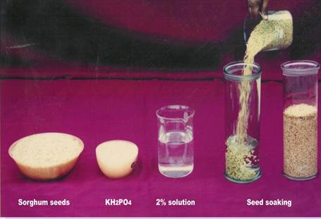
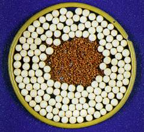
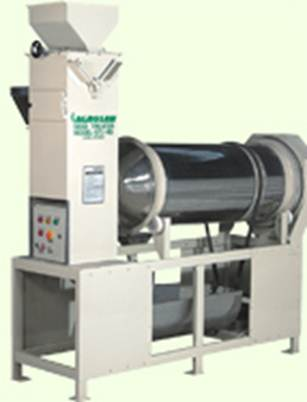
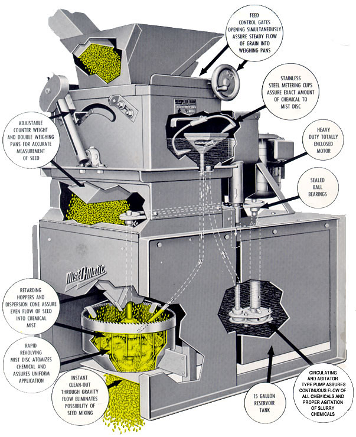

GPBR 112 :: Lecture 29 :: SEED TREATMENT

Maintaining the quality of seed is dependent on many environmental factors, some of which are moisture, temperature, humirlity, and storage conditions. Even though these factors are properly accounted for, seed quality may still be reduced by certain seedborne diseases or destroyed by insects and other pests. Research has shown that treating seed with one or more pesticides is the most economical and efficient way to protect seed from these pests and improve seed quality. Since pesticides are poisonous, extra care and safety precautions must be taken when applying them and in handling seed after it has been treated.
Definition of treated seed
The term "treated" means "to give an application of a pesticide or subject seed to a process designed to reduce, control or repel disease organisms, insects, or other pests which attack the seed or seedlings.”
Types of Seed Treatment
A. Pre sowing seed treatments
It is the treatments given to the seeds before sowing to improve the germination and vigour potential and as well as to maintain the health of the seed.
Pre sowing seed treatments includes the following
I. Chemical treatments to improve germination and vigour potential.
II. Insecticidal and fungicidal treatment.
III. Special treatments
I. Chemical treatments to improve germination and vigour potential
Soaking / treating the seeds with nutrients vitamins and micronutrients etc.
Paddy: Seeds can be soaked in 1 % KCl solution for 12 hours to improve the germination and vigour potential.
Sorghum: Seeds could be soaked in NaCl2 (1 %) or KH2PO4 (1%) for 12 hours for improving the germination and vigour potential.

Pulses : Seeds can be soaked in ZnSO4, MgSO4 and MnSO4 100 ppm solution for 4 hours to improve the germination and vigour potential.
II. Insecticidal and Fungicidal treatments
Seed health: It is an important attribute of quality seed. Though a seed lot that meets high standards of germination, vigour and purity if it is contaminated with seed borne pathogens and insect pests, may be useless to farmers because it may result in severe yield loss or even crop loss in an entire area.
Benefits of the insecticidal and fungicidal treatments:
- Prevents the spread of plant diseases
- It protects the seed from seed rot and seedling blights.
- It improves the seed germination
- It provides protection from storage insects.
- It controls the soil insects.
Seed may be affected by viruses, bacteria, fungi, nematodes and insects. Seed pests and diseases of which the seed is a victim (e.g., grain weevils, Tricoderma spp., and storage pathogens such as Aspergillus flavus) should be distinguished from seed-borne diseases of which the seed is the vehicle of pest and pathogen dissemination (e.g., bunt of cereals, Tilletia spp.)
Seed Treatment Fungicides
Fungicides are applied to seed prior to planting to provide effective protection against many seed and soil-borne plant pathogens. Chemical (fungicide) treatment guards against the various seed rots and seedling blights that occur during storage or after planting. It is not usually a "cure-all" and will not provide disease protection throughout the growing season after the plants become self-sufficient. (An exception to this would be the control of loose smut by seed disinfection).
Fungicidal seed treatment may be divided into three categories, depending on the nature and purpose of the treatment. These categories are: (1) seed disinfection, (2) seed disinfestation, and (3) seed protection. A given fungicide may serve in one or more of these categories.
Seed disinfection - Disinfection is the elimination of a pathogen which has penetrated into living cells of the seed, infected it and become established-for example, loose smut of barley and wheat.
Seed disinfestations - Disinfestation is the control of spores and other forms of pathogenic organisms found on the surface of the seed.
Seed protection - Seed protection is chemical treatment to protect the seed and young seedling from pathogenic organisms in the soil.
Seed treatment materials are usually applied to seed in one of four forms: dust; slurry (a mixture of wettable powder in water); liquids; and planter-box formulations.
Based on composition, seed treatment fungicides may be organic or inorganic, metallic or non-metallic, and, until recently, mercurial or non-mercurial. Before the cancellation of the 'volatile mercurials, fungicides for treating seed were generally classified as volatile and non-volatile. Vlith the elimination of the volatile mercurials, most fungicides now approved for use on seed are classified as non-volatile. When using this type material, complete coverage of the seed is necessary to obtain effective control.
Some of the systemics, a fairly new class of pesticides, may now be used as seed treatment materials. The desirability of having materials that would move inside the seed or plant and control the pest has long been recognized. Such materials are called "systemic." When used according to the manufacturer's recommendation (see label), a systemic moves through the host plant and controls or retards the growth of certain fungi and insects without affecting the host's metabolic system.
Seed Treatment Insecticides
Insecticides are often applied to seed to control or reduce insect damage to seed during storage and, to a lesser degree, to prevent damage from such insects as wireworms and seed corn maggots in the soil.
Combinations
Since some pesticides are selective in their control of pests, many times two or more compounds are combined in the treater tank, or an extra tank may be used, to give the spectrum of control needed.
The manufacturers of pesticides are now making combinations available to seed processors, but should a processor blend two or more pesticides, the compatibility of the materials must be determined, since some combinations of materials may seriously reduce seed germination. Also, when applying two or more pesticides, even at different times, the sequence of application may be very important. Whether a single pesticide or a combination is to be applied to the seed, read the label and follow the manufacturer's directions carefully.
Formulation of fungicides /insecticides
Fungicides / insecticides are available in the form of dusts, wettable powders and liquids.
- Dusts : It is usually applied @ 200-250 gms / quintal of seed. Main dis-advantage is dusty condition will prevail during the seed treatment and after handling.
- Slurry : This type of fungicide is applied to the seed along with soap like water suspension which can be mixed with seed by using special slurry treater.
- Liquids : The use of liquid solution is known as the "quick wet ' method. Here a volatile fungicide is applied to the seed and it throughly mixed with them.
e.g. Chemicals like panogen, mercuran, etc. can be applied by this method.
Safety
There is a general tendency to use chemicals that are safe for user and environment. Very toxic substances, such a organic mercurials (Ceresan and others) and very persistant fungicides, such as Hexachlorobenzene ((HCB), are being replaced by new chemicals, In the past, these chemicals have caused severe cases of poisoning, some resulting in death. Most if not all occurred because treated seed was used for human consumption or livestock feeding instead of for planting. Even with the new, less toxic chemicals, the following safety precautions must be taken.
- Treated seed must be clearly labelled and under no circumstances be used for feed or food.
- Seed treatment should be carried out in a well-aerated area. Contact with chemicals through breathing of dusts and skin contact must be avoided. Protective clothing should be worn.
- As with all pesticides, empty containers should be properly disposed of and never reused in a household or on the farm.
III. Special treatments
i) Seed hardening treatment
Seeds can be hardened for 2 purposes I) Drought tolerance ii) Cold tolerance
The treatments are imposed to the seeds mainly to tolerate initial drought and cold. Cold tolerance treatment is given to germinated seeds, such treatments are given only to temperate crop and tree seeds.
The most important factors to be considered while seed hardening are
- Seed : solution ratio (1:1)
- The duration of soaking
- Method of drying.
The effectiveness of the treatment depends upon the conduct of seed hardening process. The solution amount never be higher than the amount of the seeds. All solution added should be imbibed by the seeds. There should not be any leftover solution as it causes leaching effect. Once the seeds imbibe water, the germination process takes place. At the end of soaking period the seeds should be dried back to its original moisture content. These seeds when sown the germination will be completed earlier whereas in non hardened seeds the process germination takes a longer period.
Chemicals used : CaCl2, KCl, KH2PO4,
ii) Seed fortification
Main aim is to supply nutrients to seeds. The main objective is to achieve the high vigour to overcome unfavourable soil reactions. eg.) seed fortification with MnSO4 @ 0.5 to 1 %. will improve oxidation - reduction potential of seeds, which ultimately leads to higher germination.
iii) Moist sand conditioning
It is a need based treatment the concentration can be increased upto 2-4 %. Amount of solution should be 1:1 ratio or slightly excess amount of water can be used. Protinaceous seeds should not be soaked in water (e.g) soybean, etc. for these seeds, mix the seeds with moist sand @ 5 to 10% MC. It should be kept for specified period of time. The method is known as moist sand hydration.
iv) Seed pelleting
Here the nutrients are coated on the seeds. This technique is very much adopted in forest tree seeds.
Importance
- Normally in small seeds this technique is adopted .
- By pelleting we can increase the size of sees and we can make it free flowing one.
- Through this we can able to reduce the seed rate.
- It is also important for aerial sowing (gum arabica) in tree seeds.

Materials used : Nutrients , adhesive, filler material.
Inert materials: Lime, CaCO3, Chalk powder.
Plant products : Neem, Notchi, Arappu, Arappu (Albizia amara) is found good contains a susbstance saponin (growth promoter) which is similar to GA in action.
v) Seed infusion
Infusion of nutrients and growth promoting substances with organic solvents like acetone and dichlormethane.
The organic solvents, slowly increase the chemicals in to the seed. In this method there is no need for drying the seed materials to bring back the original moisture content of seed. The organic chemicals are evaporative in nature, after infusion is over, just we have to keep the seeds as such for 5 to 10 minutes in dry condition the organic solvents will evaporate during this time and we can perform sowing. Seed infusion can also be used for breaking the seed dormancy.
vi) Osmotic priming
It is a very expensive but it is a required process, particularly for large seeded legumes like peas, beans etc., They have high protein content and large embryo and are susceptible to soaking injury. High protein seeds are hygroscrpic and hydrophilic.
Osmotic priming is nothing but making the seeds to imbibe water very slowly. Osmotic solutions used are (PEG) (poly ethylene glyster). Maintol is highly toxic. PEG is inert and will increase very slowly the water in to seeds. By preconditioning through osmotic priming, the seeds are invigourated which results in uniform, early and higher field emergence and higher seedling vigour.
vii) Fluid drilling
This is a technology evolved for mechanical sowing of seeds particularly the germinated seeds. The seeds are coated with a jelly material called guar gel. It is to have a buffer action to avoid damage of the germinated seeds during sowing.
viii) Separation of viable seeds
It is a new concept particularly for groundnut. This is a good method to get desired seed germination and plant population. Incase of groundnut the actual population requirement is 30 plants / m2. Actual seed multiplication rate in groundnut is 1:8 . There are about 30-40% of dead seeds and of such dead seeds are eliminated, and then we will be able to maintain the required plant population in the field. This is the base for evolving this technology.
This can be done in 2 ways
1. Manual separation based on radicle emergence (groundnut)
2. IDS (Incubation - Drying and Separation) method.
B. Pre storage treatments
Prestorage treatments of harvest-fresh seed are primarily aimed towards protection against deteriorate senescence during storage. Seed storage which is again threatened by insect and pathogen attack, can also be taken care of by prescribed prestorage seed treatments.
- Halogenation
- Antioxidant treatment
- Seed sanitation
C. Mid storage treatments
Seeds in storage accumulate damage to cell membranes during senescence. Mid storage seed treatments are capable of reducing the age induced damages and restoring the seed vigour to a certain extent besides, the seed viability and productivity of stored seeds are also improved.
i) Hydration – Dehydration
It is the process of soaking the low and medium vigour seeds in water with or without added chemicals usually for short durations to raise the seed moisture content to 25 – 30% and drying back the seeds to safe limits for dry storage.
The hydration – dehydration treatments
1. Should be given only to stored seeds.
2. Is effective in low and medium vigour non- leguminous seeds,
3. The moisture equilibration and moist sand conditioning treatments in which moisture is taken up by the seed in a slow and progressive manner, are recommended for relatively high- vigour seeds and seeds of pulses and leguminous vegetable crops
6. Direct soaking of leguminous seeds should be avoided.
7. Would not make a seed germinable, which has already lost viability.
Types of H-D treatments
The wet treatments include soaking-drying, dipping-drying, spraying-drying, stepwise hydration-drying, moisture equilibration-drying, moisture equilibration soaking-drying, moist and conditioning-drying, etc. The choice of the treatment depends upon the characteristics of seed and initial vigour status of the seeds.
Soaking – Drying (S-D)
Stored seed is soaked in water or solution of chemicals sufficient to cover it and kept at room temperature for 2-6 hour depending on the material with occasional stirring. The soaked seed is taken out and after surface drying in the shade for some time, dried back to the original moisture content Dilute solution of chemicals such as sodium or potassium phosphate (di and mono basic), sodium chloride,
p-hydroxy benzoic acid, p-amino benzoic acid, oxalic acid, potassium lodide, etc can also be used at 10-4 to 10-3 M concentrations. Fungicidal and insecticidal formulations can also be incorporated in the soak water.
Dipping – Drying (D-D)
Seeds are dipped in water or solutions of the aforesaid chemicals for only 2-5 minutes and the wet seed is taken out immediately and kept covered for 2 – 6 hours depending on the material, for absorption of surface water followed by drying back in S-D. This treatment is effective in most high and high-medium vigour seeds of rice, wheat, jute, summer and winter vegetables
Spraying – Drying
Seeds are spread in a thin layer and then an amount of water (approximately 1/5 to ¼ of the seed weight) is sprayed on to it in two equal installments (turning over the seed layer after the first spray) and then kept covered by a polythene sheet for 2-4 hours before drying back. This treatment is similar to D-D in its efficacy and suitability.
Moisture equilibration – drying (ME – D)
Here, the seeds are placed in thin layers on trays kept on a raised platform in a closed moisture saturated chamber lined internally with moist blotters giving nearly 100% RH at room temperature. After 24-48 hours, depending on the material and ambient temperature, the seed is dried back in the usual way. For soaking injury prone seeds this treatment, which gives a slow and progressive rise in moisture content, is very effective. ME-D, however, difficult to practice on a large scale and is not advocated for low vigour non leguminous seeds because of possible aging effect of the treatment especially when given for prolonged periods.
Moist sand conditioning – drying (MSC-D)
This treatment is similar to the moisture equilibration treatment but easier to practice. For slow and progressive moisture uptake, the seed is thoroughly mixed with pre-moistened sand, using 3 times the amount of air dry sand than seed. Moisture content of sand is adjusted to 5-10 by adding the requisite amount of water or solution of chemicals to previously washed and dried fine grain building grade sand. The addition of water should be so adjusted as to get the required hydration effect without initiating the germination process. After mixing the dry seed with the premoistened sand, the mixture is kept at room temperature for 16 – 36 hours depending on the material and sand moisture content. The seed absorbs moisture from sand and after incubation the hydrated seed is separated from sand by sieving and dried back to the original weight.
Mode of Action The main purpose of hydration is to raise the seed moisture content to 25 –30% (wet weight basis) before drying back to safe limits for dry storage. The hydration - dehydration treatment may improve the vigour by controlling free radical reactions and consequent peroxidative damage to lipoprotein cell membranes.
SEED TREATING EQUIPMENT
Commercial seed treaters are designed to apply accurately measured quantities of pesticides to a given weight of seed. Basically, there are three types of commercial seed treaters on the market: dust treaters, slurry treaters, and direct treaters-the Panogen and Mist-O-Matic treaters are examples of direct treaters.
1. Dust Treater (Gustafson XL Dry Powder Seed Treater)
Controlling the Flow of Seed:
The amount of seed which flows into the weigh pan (which is just beneath the feed hopper on top of the treater) is controlled by opening or closing the gates of the feed hopper by means of the hand wheel on the side of the hopper. The scale on the hopper shows how far the gates are open (in inches). Gates should be open to whatever number of inches it takes to keep the weigh pan filled to the required number of pounds per dump as it tilts in either direction. The number of pounds per
dump is adjusted by correctly setting the counterweight up or down on the counterweight arm.
Powder Application:
To be sure that the correct amount of powder is being applied to the seed flow, a preliminary test must be made in which a given number of pounds of seed (such as 100 lbs) is run through the feeder.
During this run, the measuring cup provided with the feeder should be used to catch the powder as it comes off the vibrator. After the given amount of seed has run through, the powder should be weighed in order to determine how much is being applied to that amount of seed. The vibrator speed can then be adjusted accordingly. Then a second or more tests should be run until proper setting of the vibrator speed is determined for correct coverage.
Approximate Setting
No. Dumps |
Powder Scale Opening |
Syntron Setting |
Oz. Produced/100 lbs. |
25 |
1/2 |
60 |
2 |
25 |
3/4 |
60 |
5 |
25 |
3/4 |
70 |
6 |
25 |
3/4 |
80 |
7 |
25 |
1 |
60 |
10 |
Number 4 on counterweight arm gives five pounds per dump.
2. Slurry Seed Treater
The slurry treatment principle involves suspension of wettable powder treatment material in water. The treatment material applied as a slurry is accurately metered through a simple mechanism composed of a slurry cup and seed dump pan. The cup introduces a given amount of slurry with each dump of seed into a mixing chamber where they are blended.
While operation of the slurry treater is relatively simple, the various operation procedures must be thoroughly understood.
- The metering principle is the same in direct, ready-mix or fully automatic treaters-i.e., the introduction of a fixed amount of slurry to a given weight of seed.
- To obtain a given dump weight, slurry treaters are equipped with a seed gate that controls seed flow to the dump pan. With the proper seed gate setting, a constant dump weight for a given can be obtained.
- The amount of treatment material applied is adjusted by the slurry concentration and the size of the slurry cup or bucket. As the dump pan fills, a point is reached where it over-balances the counter weight and dumps into the mixing chamber. This brings the alternate weighing pan in position to receive the inflow of seed and activates a mechanism to add a cup of slurry to the mixing chamber. Thus, one cup of slurry is added with each dump of seed.
- The mixing chamber is fitted with an auger type agitator that mixes and moves seed to the bagging end of the chamber. The speed of the auger is important, because at slow speeds more uniform distribution is obtained.
Slurry tanks have 15 to 35 gallon capacities, depending upon the size of the treater. They are equipped with agitators that mix the slurry in the tank and keep it suspended during operation. It is important that the powder be thoroughly suspended in water before treating. If the treater has been idle for any period of time, sediment in the bottom of the slurry cups must be cleaned out.
The proper size slurry cup must be used. Most machines now have cups with ports and rubber plugs for 15 cc, 23 cc, and 46 cc quantities. Some users prefer to mix the slurry in an auxiliary tank and then transfer to the slurry chamber as needed.
DIRECT TREATERS
Direct treaters are the most recent development and include the Panogen and Mist-O-Matic treaters. These two were initially designed to apply undiluted liquid treatment. Instead of applying 23 cc of material per 10 pounds of wheat, as in slurry treaters, they apply 14 to 21 cc (1/2 to 3/4 ounces) per bushel of "wheat. This small quantity of material is suitable only with liquid materials which are somewhat volatile and do not require complete, uniform coverage for effective action.
Later modifications for direct treaters include dual tanks that permit simultaneous addition of a fungicide and an insecticide, and adaptations for the application of slurries. The metering device used in both types of direct treater is similar to that of the slurry treater, since it is attained through synchronization of a treatment cup and seed dump. Otherwise, the two direct treaters differ decidedly from the slurry treater and from each other. Both of these direct treaters have an adjustable dump pan counter weight to adjust the weight of the seed dump. This is not practical with slurry treaters.
3. Panogen Seed treater
The operation of the Panogen treater is relatively simple. A small treatment cup, operating from a rocker arm directly off the seed dump pan and out of a small reservoir, meters one cup of treatment with each dump of the seed pan. Fungicide flows through a tube to the head of the revolving drum seed mixing chamber. It flows in with seed from the dumping pan and is distributed over the seed by
the rubbing action of the seed passing through the revolving drum.
The desired treating rate is obtained by the size of the treatment cup and by adjusting the seed dump weight. Treatment cup sizes are designated by treating rate in ounces and not by actual size-e.g., the 3/4 ounce cup applies 3/4 ounce (22.5 cc) of treatment per bushel with six dumps per bushel. The actual size of this cup is approximately 3.75cc.

4. Mist-O-Matic Seed Treater:
The "mist-o-matic" treater applies treatment as a mist directly to the seed. The metering operation of the treatment cups and seed dump is similar to that of the "Panogen" treater. Cup sizes are designated by the number of cc's they actually deliver-e.g., 2 ½ , 5, 10, 20 and 40. The treater is equipped with a large treatment tank, a pump and a return that maintains the level in the small reservoir from which the treatment cups are fed.
After metering, the treatment material flows to a rapidly revolving, fluted disc mounted under a seed-spreading cone. The disc breaks droplets of the treatment solution into a fine mist and sprays it outward to coat seed falling over the cone through the treating chamber. Just below the seed dump are two adjustable retarders designed to give a continuous flow of seed over the cone between seed dumps. This is important since there is a continuous misting of material from the revolving disc. The desired treating rate is obtained through selection of treatment cup size and proper adjustment of the seed dump weight.
| Download this lecture as PDF here |